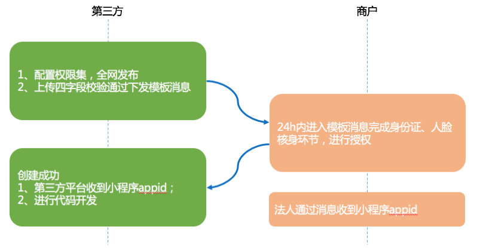

快速创建小程序接口¶
说明¶
接口说明：¶
快速创建小程序接口优化了小程序注册认证的流程, 采用法人人脸识别方式替代小额打款等认证流程, 极大的减轻了小程序主体. 类目资质信息收集的人力成本。第三方只需收集法人姓名. 法人微信. 企业名称. 企业代码信息四个信息, 便可以向企业法人下发一条模板消息来采集法人人脸信息, 完成全部注册. 认证流程。 快速创建小程序接口能帮助第三方迅速拓展线下商户, 拓展商户的服务范围, 占领小程序线下商业先机。
通过该接口创建小程序默认“已认证”。为降低接入小程序的成本门槛, 通过该接口创建的小程序无需交 300 元认证费。
注：该接口只能创建线下类目小程序, 创建线上类目小程序将被驳回, 且影响第三方调用该接口的 quota。
创建小程序类目可参考¶
快速创建小程序接口-类目参考表
接口接入说明：¶

权限集准备：第三方平台需具有以下权限集。（更新权限集后, 需通过审核并全网发布后才可生效.
权限集
是否必填
账号管理权限
必填
开发管理与数据分析权限
必填
开放平台账号管理权限
必填
小程序基本信息设置权限
必填
小程序认证权限
必填
插件管理权限
必填
附近地点权限
选填（以防今后业务需要, 建议勾选.
第三方收集法人微信. 法人姓名. 企业名称. 信用代码四个商户信息外加第三方客服电话, 方便商家与第三方联系（建议填写第三方客服电话. ；
企业名称需与工商部门登记信息一致；法人姓名与绑定微信银行卡的姓名一致。信息收集时要确保四个信息的对应关系, 否则接口无法成功调用。
通过法人&企业主体校验, 平台向法人微信下发模板消息。法人需在 24 小时内点击消息, 进行身份证信息与人脸识别信息收集；
信息收集完毕, 验证通过后, 即可创建已认证的小程序。第三方平台服务器可以收到创建 appid 信息（通过授权登录相关-授权事件接收 URL 接收信息. ；
第三方获得小程序 appid 后, 可调用代码开发相关接口, 完成后续的小程序代码开发。
小程序开发接口可参考：
小程序基本信息设置
成员管理
代码管理
小程序代码模板管理
一. 创建小程序接口¶
http 请求方式：POST (请使用 https 协议)
POST 数据示例：
{
"name": "tencent", // 企业名
"code": "123", // 企业代码
"code_type": 1, // 企业代码类型（1：统一社会信用代码, 2：组织机构代码, 3：营业执照注册号.
"legal_persona_wechat": "123", // 法人微信
"legal_persona_name": "pony", // 法人姓名
"component_phone": "1234567" //第三方联系电话
}
参数说明：
参数名 |
描述 |
|---|---|
name |
企业名（需与工商部门登记信息一致. |
code |
企业代码 |
code_type |
企业代码类型 1：统一社会信用代码（18 位. 2：组织机构代码（9 位 xxxxxxxx-x. 3：营业执照注册号(15 位) |
legal_per sona_wech at |
法人微信号 |
legal_per sona_name |
法人姓名（绑定银行卡. |
component _phone |
第三方联系电话（方便法人与第三方联系. |
返回结果示例：
{
"errcode": 0, // 状态码, 0 成功, 其他失败
"errmsg": "OK" // 错误信息
}
错误码说明：
错误码 |
含义 |
提示语 |
|---|---|---|
0 |
成功 |
ok |
-1 |
非法 action 参数 |
invalid action |
89249 |
该主体已有任务执行中, 距上次任务 24h 后再试 |
task running |
89247 |
内部错误 |
inner error |
86004 |
无效微信号 |
invalid wechat |
61070 |
法人姓名与微信号不一致 name, |
wechat name not in accordance |
89248 |
企业代码类型无效, 请选择正确类型填写 |
invalid code type |
89250 |
未找到该任务 |
task not found |
89251 |
待法人人脸核身校验 |
legal person checking |
89252 |
法人&企业信息一致性校验中 |
front checking |
89253 |
缺少参数 |
lack of some params |
89254 |
第三方权限集不全, 补全权限集全网发布后生效 |
lack of some component rights |
注意：创建任务逻辑串行, 单次任务结束后才可以使用相同信息下发第二次任务, 请注意规避任务阻塞。
二. 查询创建任务状态¶
http 请求方式：POST（请使用 https 协议)
POST 数据示例：
{
"name": "tencent", // 企业名
"legal_persona_wechat": "123", // 法人微信
"legal_persona_name": "pony" // 法人姓名
}
参数说明：
参数名 |
描述 |
|---|---|
name |
企业名 |
legal_persona_wechat |
法人微信号 |
legal_persona_name |
法人姓名（绑定银行卡. |
返回结果示例：
{
"errcode": 0, // 状态码, 0 成功, 其他失败
"errmsg": "OK" // 错误信息
}
错误码说明：
错误码 |
含义 |
提示语 |
|---|---|---|
0 |
成功 |
ok |
-1 |
非法 action 参数 |
invalid action |
89247 |
内部错误 |
inner error |
89250 |
未找到该任务 |
task not found |
89251 |
模板消息已下发, 待法人人脸核身校验 |
legal person checking |
89252 |
法人&企业信息一致性校验中 |
front checking |
89253 |
缺少参数 |
lack of some params |
注：该接口只提供当下任务结果查询, 不建议过分依赖该接口查询所创建小程序。小程序的成功状态可在第三方服务器中自行对账. 查询。
三. 注册审核事件推送¶
数据示例
<xml>
<AppId><![CDATA[第三方平台appid]]></AppId>
<CreateTime>1535442403</CreateTime>
<InfoType><![CDATA[notify_third_fasteregister]]></InfoType>
<appid>创建小程序appid<appid>
<status>0</status>
<auth_code>xxxxx第三方授权码</auth_code>
<msg>OK</msg>
<info>
<name><![CDATA[企业名称]]></name>
<code><![CDATA[企业代码]]></code>
<code_type>1</code_type>
<legal_persona_wechat><![CDATA[法人微信号]]></legal_persona_wechat>
<legal_persona_name><![CDATA[法人姓名]]></legal_persona_name>
<component_phone><![CDATA[第三方联系电话]]></component_phone>
</info>
</xml>
status 返回 |
含义 |
|---|---|
100001 |
已下发的模板消息法人并未确认且已超时（24h), 未进行身份证校验 |
100002 |
已下发的模板消息法人并未确认且已超时（24h), 未进行人脸识别校验 |
100003 |
已下发的模板消息法人并未确认且已超时（24h) |
101 |
工商数据返回：“企业已注销” |
102 |
工商数据返回：“企业不存在或企业信息未更新” |
103 |
工商数据返回：“企业法定代表人姓名不一致” |
104 |
工商数据返回：“企业法定代表人身份证号码不一致” |
105 |
法定代表人身份证号码, 工商数据未更新, 请 5-15 个工作日之后尝试 |
1000 |
工商数据返回：“企业信息或法定代表人信息不一致” |
-1 |
企业与法人姓名不一致 |
注意
建议：可以使用接口请求的企业名称. 企业代码. 法人微信. 法人姓名四个字段作为每次任务的唯一标示, 来区别每次任务。
常见问题整理：
post 信息有误：
注意编码问题, 中文无需转码；
注意保证主体信息与工商部门登记一致。如：广州和广州市； 查看国家企业信用信息公示系统
微信号填写错误, 需正确引导获取位置“微信”-“我”（不能使用手机号或 QQ 号)
确保微信号主人和微信支付绑定银行卡的主人姓名一致。核实用户是否有改过名字, 或者近期有做身份证升级（从 15 位身份证升级成 18 位身份证。
不要频繁调用
search接口, 消息接收需通过服务器查看。调用search接口会消耗接口整体调用quato.没有收到模板消息的情况：
第三方需检查服务器是否有推送事件消息；
引导用户寻找“公众平台安全助手”公众号, 查找“创建小程序申请”消息；
第三方检查接收微信号是否一致；
刚提交任务不会马上收到, 会有几分钟或者十几分钟延迟（实际时间取决于信息收集的准确程度)
若提示法人验证失败, 查看服务器消息状态码（status), 调整信息, 重新提交任务。